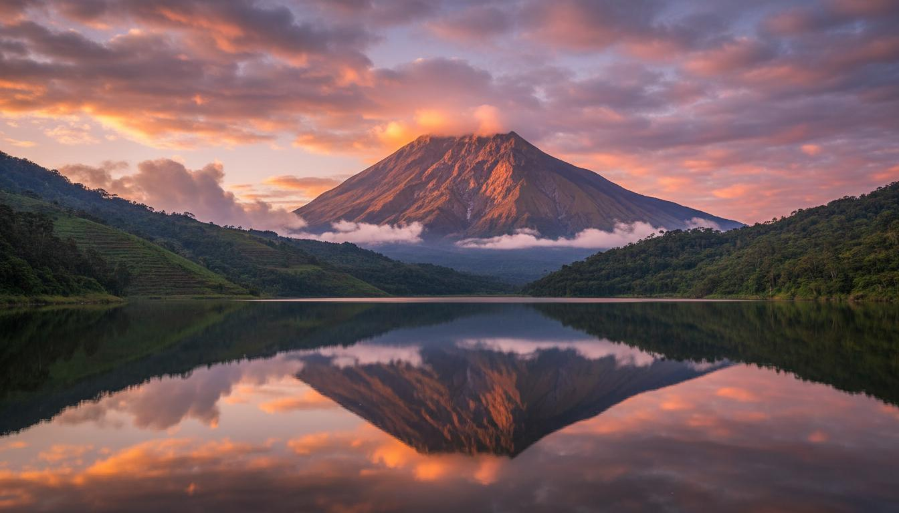
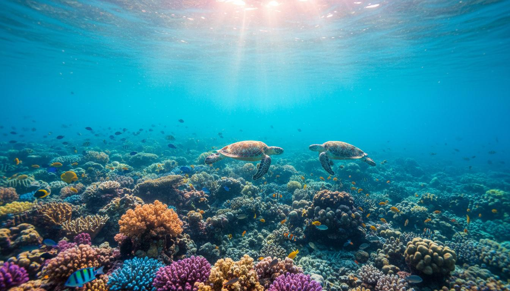
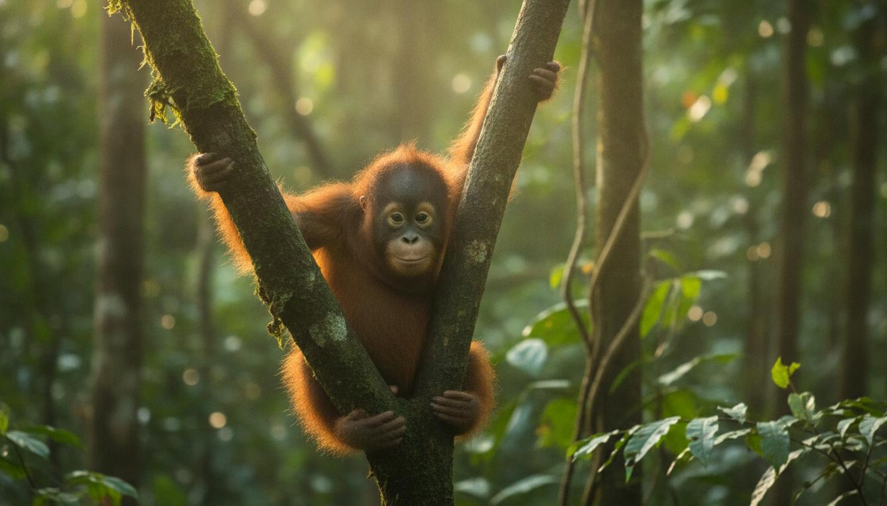
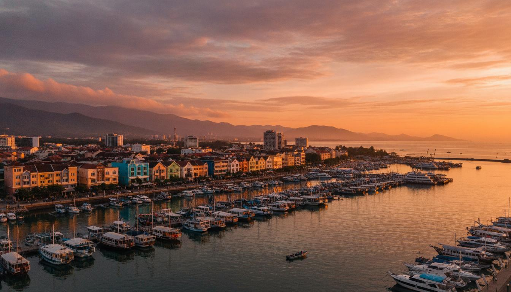
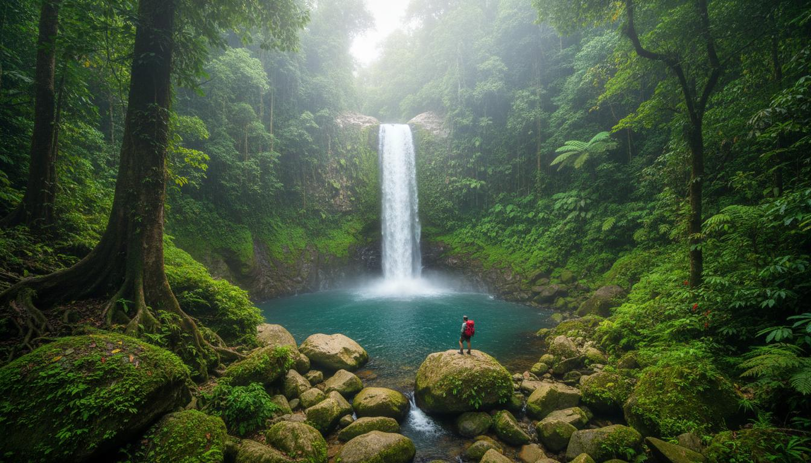
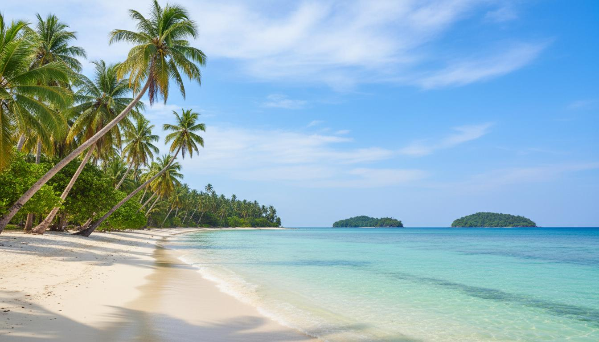

The Land Below the Wind Awaits You
From the soaring peaks of Mount Kinabalu to the underwater wonders of Sipadan Island, Sabah is a treasure trove of natural beauty and cultural richness waiting to be explored.
Explore Sabah
Scale Southeast Asia's highest peak at 4,095 meters. Experience breathtaking sunrise views from the summit and explore unique alpine ecosystems.
Learn More
Dive into one of the world's top diving destinations. Swim alongside sea turtles, vibrant coral reefs, and diverse marine life.
Learn More
Witness the rehabilitation of orphaned orangutans in their natural habitat. A heartwarming wildlife experience like no other.
Learn More
Explore the vibrant capital city with stunning sunsets, bustling markets, delicious cuisine, and rich cultural heritage.
Learn More
Venture into Sabah's "Lost World" - a pristine rainforest wilderness with majestic waterfalls and incredible biodiversity.
Learn More
Relax on pristine white-sand beaches with crystal-clear turquoise waters. Island hopping paradise awaits in Tunku Abdul Rahman Park.
View GalleryNeed help planning your Sabah adventure? Check out our comprehensive travel guide or get in touch with us for personalized recommendations.
Listen to the soothing sounds of Borneo's tropical rainforest